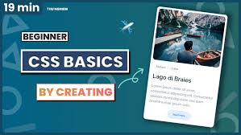
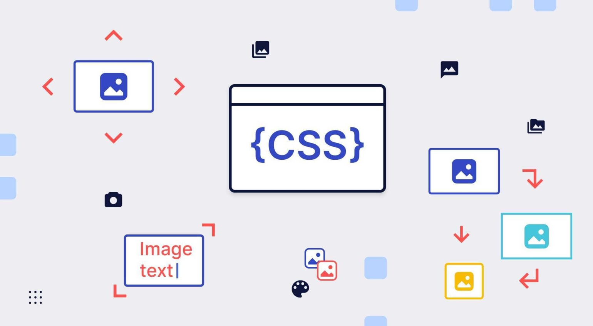
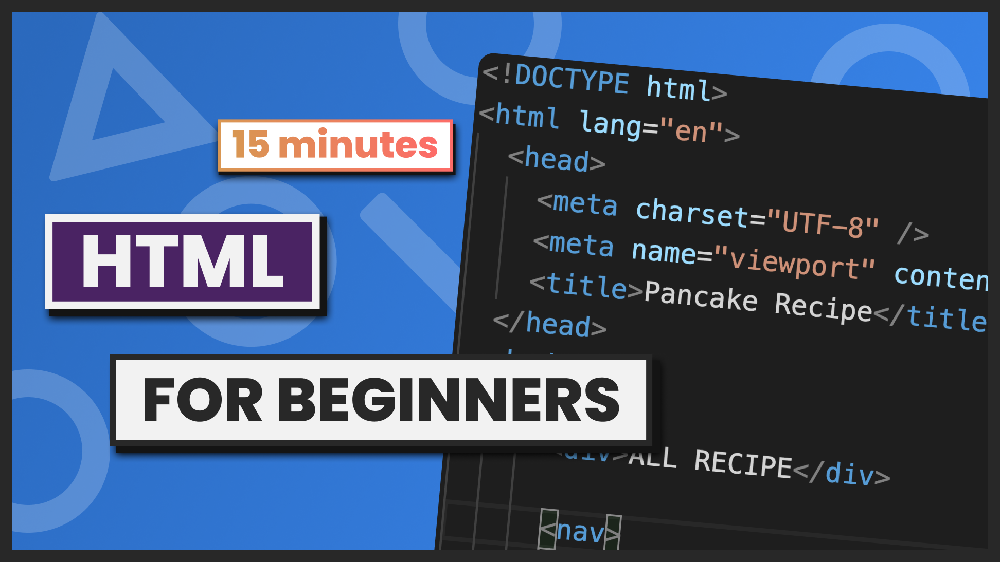
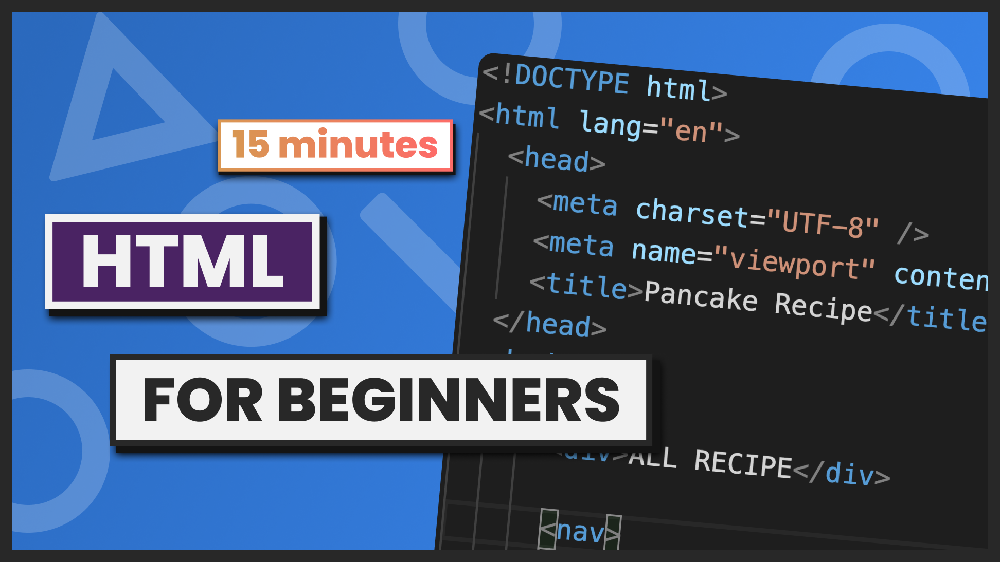

There are many usses of html some are as folow.........
html gives the structure of website
It is used to struct website
without html we can bulid or design any website so html is very important to creating a website
All website are formed by the help of html
Concept about CSS
why use css.....
CSS is used to define styles for your web pages, including the design, layout and variations in display for different devices and screen sizes.
with the help of css we can design a website
Without css we can not design any website
All website are design by css
Controlling Effects and Flash Animation
Managing Dynamic Web Templates. ...
Server-Side and End-User Representation.


s
We recommend reading this tutorial, in the sequencec listed in the menu. If you have a large screen, the menu will always be present on the left.
If you have a small screen, o pen the menu by clicking t he top menu sign ☰. CSS Templates:- We have created some responsive W3.CSS templates for
you to use.
You are free to modify, save, share, and use them in all your projects.


 

 s
s